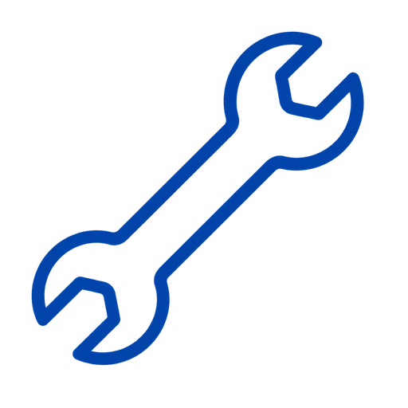
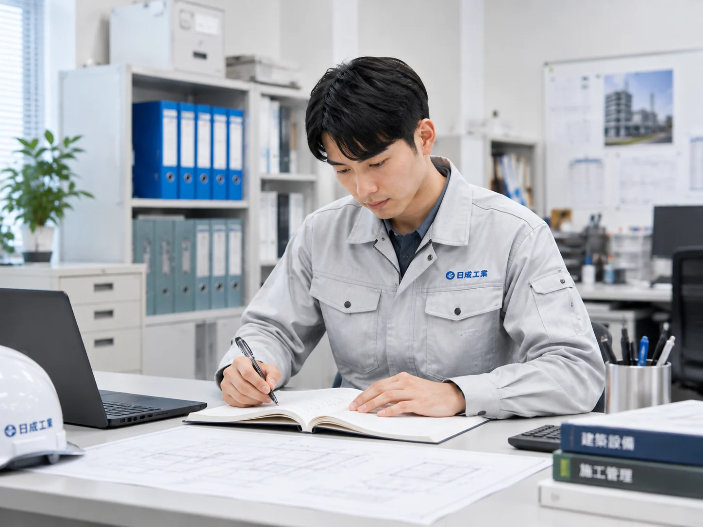
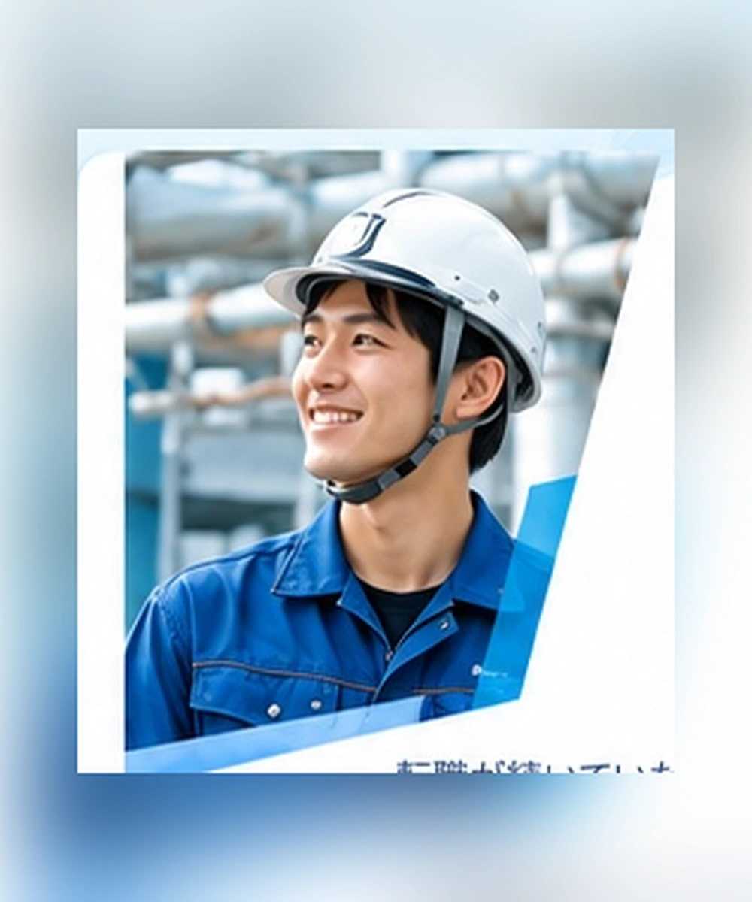
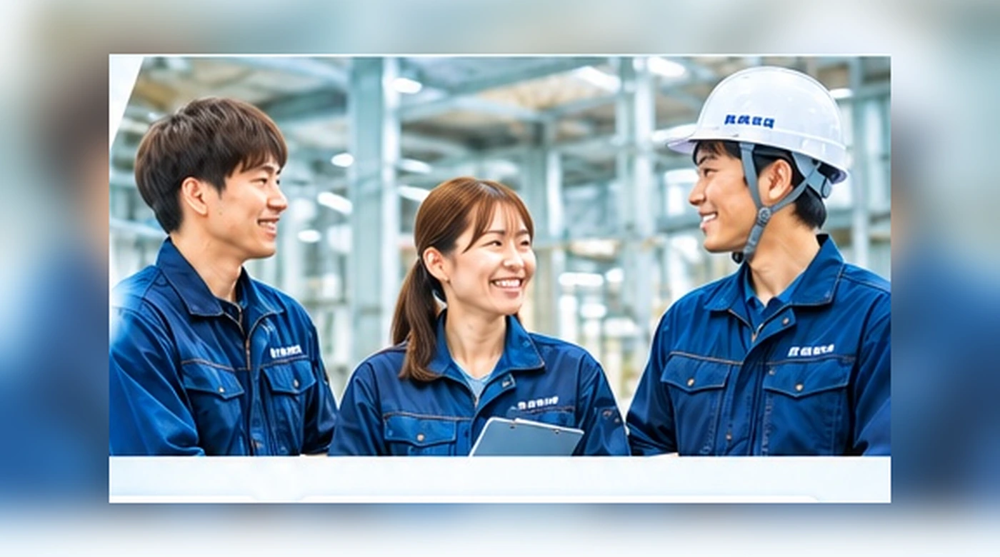

REASON
01
面接1回・経験不問
今のスキルや経験は問いません。
工具の名前がひとつもわからない状態から入社した先輩もいます。
先輩がマンツーマンでつくので、段階を踏んで成長できます。
先輩がしっかりサポートするので、
未経験からでも安心してスタートできます。
SECTION 01
はじめてでも、プロになれる場所がある。
沖縄で給排水・空調・消火の設備工事を手がける設備技研。
経験は問いません。面接は1回。
先輩が隣について、少しずつ「できること」を増やしていける、
未経験からでも、ちゃんと育つ会社です。
経験・資格は不要
スピード選考
頑張りをしっかり評価
SECTION 02

資格も経験もないけど、
手に職をつけたい
今の仕事に、
なんとなく
物足りなさを
感じている
フリーターから
正社員を
目指したい
地元・沖縄で、
長く続けられる
仕事を探している
「盗んで覚えろ」と
言われる職場が
苦手

SECTION 03｜設備技研が選ばれる理由
REASON
01
今のスキルや経験は問いません。
工具の名前がひとつもわからない状態から入社した先輩もいます。
先輩がマンツーマンでつくので、段階を踏んで成長できます。
先輩がしっかりサポートするので、
未経験からでも安心してスタートできます。
REASON
02
週休2日＋有休で4連休も可能
週休2日制を導入。休日と有給を組み合わせれば4連休も可能です。
プライベートが充実していないと、仕事にも全力投球できない——
そう考えています。
休日と有休を組み合わせれば4連休も取得可能。
プライベートを大事にできてこそ、仕事にも力が入ります。

REASON
03
月収20万円〜、能力に応じて昇給
脱フリーターを目指す方も、キャリアチェンジしたい方も、
前向きな意欲があれば月給20万円〜でお迎えします。
実力に応じてしっかり評価する仕組みがあります。
フリーターから正社員へ、キャリアチェンジも歓迎。
前向きな意欲があれば、しっかり応えます。
REASON
04
先輩社員がツーマンセルでフォローする体制のもと、
知識・技術を順序立てて教えます。
わからないことを聞きやすい空気づくりを、
会社として大切にしています。

REASON
05
1級管工事施工管理技士、建築設備士など、
現場で役立つ資格取得を支援。
手に職をつけながら長く働けます。

SECTION 04｜仕事紹介
公共工事から民間のマンション・ビルまで、
幅広い現場の管理を担う仕事です。
施工図面の作成やスケジュール調整、
安全管理などを行い、
現場を「正確に・安全に」動かす
司令塔のような役割です。
BIMツール（3D CAD）なども積極的に取り入れ、
業務の効率化と品質向上を進めています。
ホテルやマンションのリニューアル工事、
給排水設備の不具合対応などを担当。
老朽化した配管のトラブル解決には
経験と技術力が求められますが、
ベテラン社員が多く、社内での
技術共有も活発に行われています。
新築・リニューアル工事の着工前に、
必要な材料や工事にかかる費用を
算出する仕事です。
図面をもとに数量を拾い出し、
コストを見積もることで、
工事全体がスムーズに進むよう支えます。
給排水にまつわる各種申請書類の
作成・提出・官公庁とのやりとりを担当。
現場が予定通り完成できるよう、
工事全体を裏側から支える
大切な役割です。

電気設備機器や空調機器などを扱う因幡電機産業株式会社からの積算業務を、
県内外のサブコン企業に代わって請け負う専門部署です。
2009年に開設し、業務の効率化と仲間の有効活用を実現しています。
SECTION 05｜1日の流れ
ラジオ体操 → 一日の作業動線・安全チェック。
「今日も無事に終わろう」がスタートの合言葉。

施工図の作成・修正、現場の進捗チェック、
配置や資材管理、写真撮影、
職人さんとのコミュニケーションが仕事の中心。

仲間と食べると、これが意外と楽しい時間。

午前の進捗報告 ＋ 翌日の段取り確認。

上司に一日の報告をして、終了！

墨だし → 配管作業 → 水圧試験 → 勾配確認。

熱中症対策でしっかり水分補給。大事。


清掃・整理整頓 → 上司に報告 → 帰宅！

SECTION 06
実際に働く先輩たちの
リアルな声を聞いてみました！

「辞めようって考える
ことさえない」
ネットで「沖縄 設備」と検索したらたまたまヒットして、気づいたら7年続いていました。
とにかく仕事を任せてもらえるし、権限が広い。実力に応じてちゃんと評価してくれる会社なので、自分で目標を立てて動く意義を感じます。
この会社で求められるのは、「小さな責任感」だけ。期日を守る、トラブルがあったらすぐ連絡する——それだけで、どんどんチャンスをもらえます。

「突っ走っても良い、
任せてくれる会社」
転職が続いていた自分が、「どうせなら職人の技術も1から理解した上で現場管理をやってみたい」と思って入社しました。
1から知りたい、やってみたい——そんな衝動を認めてくれる会社です。
視野が狭かった自分を、仕事が成長させてくれました。
インタビュー情報を
ここに追加できます
氏名・部署・入社年・キャッチコピー・本文は、次のCMS/Supabase教材で差し替えられる構造です。
インタビュー情報を
ここに追加できます
データが届いたら、このカードのテキストだけを差し替えて使えます。

インタビュー情報を
ここに追加できます
写真・文章を個別管理できるように、同じカードテンプレートで増築しています。
インタビュー情報を
ここに追加できます
後から社員数を増やすカリキュラムにも発展できる構造です。
SECTION 07
施工管理・現場監督（見習い可）
配管工の職人（未経験・見習い可）
正社員
正社員：月給200,000円〜
残業手当・資格手当
※スキル・経験により応相談
8:00〜17:30（実働8時間）
40歳以下 ※長期勤続によるキャリア形成のため、募集年齢を制限します。
※現場の状況により、土日祝出勤になる場合もあります
沖縄県沖縄市泡瀬1-10-21「工事部」
※マイカー通勤、バイク通勤可能！無料駐車場あり
SECTION 08
34年間、
ずっと沖縄と一緒に。
SECTION 10
こんな先輩が働いています



SECTION 11
FAQ ／ 設備技研のホンネ
働く前に気になること、ぜんぶお答えします。

POINT 01
週休2日制＋有休の組み合わせで
4連休も作れる環境。
プライベートがスカスカなのに、
仕事だけ全力なんて無理な話。
メリハリつけて働くのが、
設備技研のスタイルです。
POINT 02
今のスキルや経験は、
正直気にしていません。
入ってからチームでノウハウを
共有していくスタイルなので、
研修を重ねるうちに、気づけば
戦力になっています。
工具の名前ひとつ知らない状態で
入った先輩も、今は現場のリーダーです。
POINT 03

フリーターから抜け出したい人も、
全然違う業界から来た人も。
やる気さえあれば月給20万円
スタートでお迎えします。
勉強して資格を取れば、
給料も上がります。
やった分が返ってくる会社です。
POINT 04

「上司に意見が言えない」
「見て盗め」「残業して当たり前」——
かつての建設業界は正直そういう
空気がありました。
でも、それじゃ人はついてこない。
設備技研は変わることにしました。
何かあれば言える。相談できる。
そういう職場をつくっています。
ほかにも気になることがあれば、お気軽にお問い合わせください。
現場や時期によりますが、
休日・有給取得の環境整備に
取り組んでいます。
4連休の取得実績もあります。
入社時点では不要です。
働きながら資格取得を
サポートします。
資格が増えると給与にも
反映されます。
総務・積算部門を中心に、
女性スタッフも活躍しています。
SECTION 12
エントリー（採用情報）
「どんな仕事か知りたい」
「自分でも採用されるか不安」
「とりあえず話だけ聞いてみたい」
どんな理由でもOKです。
気軽に連絡してください。

まずはお気軽にご応募・お問い合わせください。
担当者より、折り返しご連絡いたします。